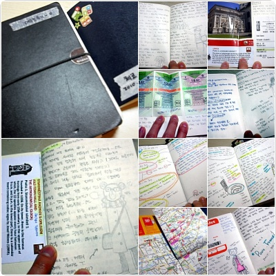
2009년 여름 여행을 시작으로
나름 성실하게(?) 여행후기 노트를 만들고있는데
다시 읽어보니까 내용이 다 넘 처절해 =ㅂ=;;;
댕겨온곳 형광펜으로 표시한 지도도 붙이고
이것저것 댕겨온 티켓/트램 표/영수증 붙이기
구석에 낙서 끄작끄작 하기
기타등등^^;;;
아직까지는 그림보다는 텍스트가 더 많은데
나중에는 꼭 여행한곳 풍경이나 사람들
다 그림으로 남겨오고 싶다//ㅅ//
어제 학교서 1학년 생인데
이미 결혼도 하고 애도있는 아저씨 한분의(...;)
스케치북 리뷰(?)가 있었는데
양이 어마어마했음;;
오랜시간동안 매일같이 일기와 함께 빠짐없이
일러스트로 자기 주변일상을
남겨온걸 봤는데 진짜 대단했다능@_@
지금 니가 하고있는 프로젝트에 관련이 없어보여도
진도가 잘 안나가거나 아이디어가 안 떠오르면
밖에나가 돌아댕기고 스케치하라는 말이
초금 이해가 갈려고 한다;;;OTL
(날이 따닷해지니까 소풍가고싶어서 그런걸지도^^;;;)
밑에는 요 티켓으로 어디어디 댕겨왔나
기록해놓기^^**
옷 가져간거 다 껴입고 후드+목도리까지
하고 댕긴날^^;;;
무모했던 여행계획^^;;;
나름 성실하게(?) 여행후기 노트를 만들고있는데
다시 읽어보니까 내용이 다 넘 처절해 =ㅂ=;;;
댕겨온곳 형광펜으로 표시한 지도도 붙이고
이것저것 댕겨온 티켓/트램 표/영수증 붙이기
구석에 낙서 끄작끄작 하기
기타등등^^;;;
아직까지는 그림보다는 텍스트가 더 많은데
나중에는 꼭 여행한곳 풍경이나 사람들
다 그림으로 남겨오고 싶다//ㅅ//
어제 학교서 1학년 생인데
이미 결혼도 하고 애도있는 아저씨 한분의(...;)
스케치북 리뷰(?)가 있었는데
양이 어마어마했음;;
오랜시간동안 매일같이 일기와 함께 빠짐없이
일러스트로 자기 주변일상을
남겨온걸 봤는데 진짜 대단했다능@_@
지금 니가 하고있는 프로젝트에 관련이 없어보여도
진도가 잘 안나가거나 아이디어가 안 떠오르면
밖에나가 돌아댕기고 스케치하라는 말이
초금 이해가 갈려고 한다;;;OTL
(날이 따닷해지니까 소풍가고싶어서 그런걸지도^^;;;)
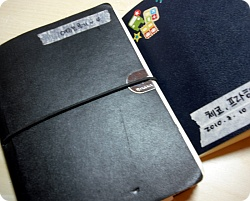
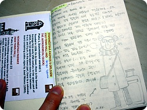
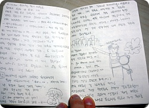
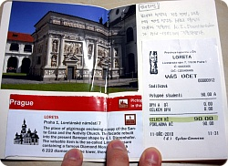
댕겨온곳 입장권/영수증 이라던가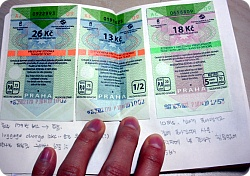
트램 이용티켓밑에는 요 티켓으로 어디어디 댕겨왔나
기록해놓기^^**
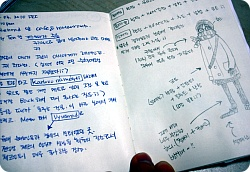
오른쪽 그림은 이날 너무추워서옷 가져간거 다 껴입고 후드+목도리까지
하고 댕긴날^^;;;
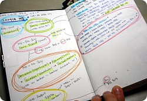
요건 2009년 여름 정말 지금생각해도무모했던 여행계획^^;;;
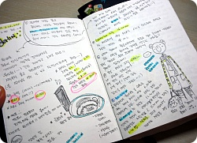
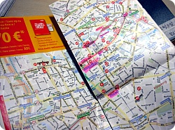
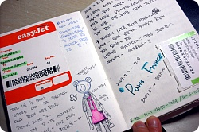
요고요고~만드는 재미가 쏠쏠합니다//홋홋
(지금 내가 과제하기 싫어서 딴짓하는건 절대아........←퍽;;)
(지금 내가 과제하기 싫어서 딴짓하는건 절대아........←퍽;;)